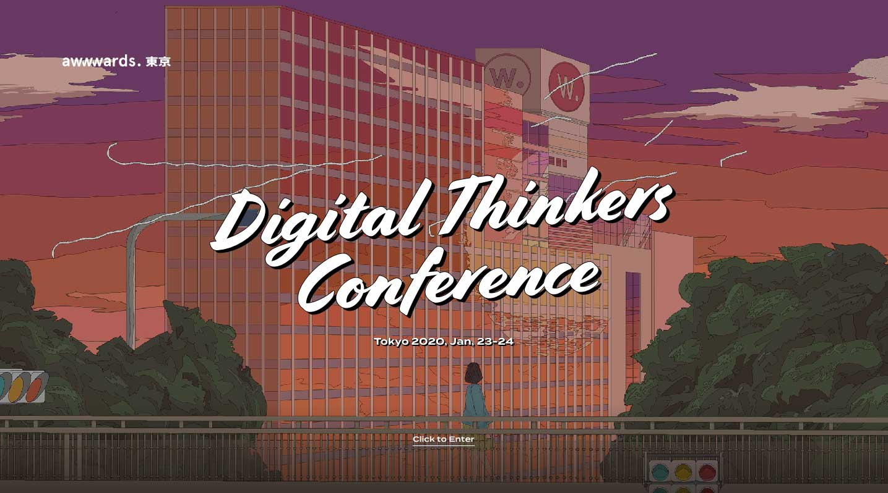

Digital Thinkers Conference
Go to Site
DESIGN
This website is nicely designed because it was made for a design conference. The animated illustrations, transitions, buttons, choice of colour, typography really compliment each other to create an interactive user experience. The splash page utilizes the loading percentage in a red circle in the middle, echoing the Japanese flag as the conference is held in Tokyo. The aesthetics are also just very intricate and appealing.
USABILITY
Some things in the website are extremely laggy because there are many heavy full-screen animated illustrations. The designers of this website tried really hard with interactive aspects of the design that it takes away from the actual content on some pages.
CREATIVITY
This website goes far in-depth in creating a heavily visual aesthetic atmosphere where there are many animated components. It is really pleasing to look at, but I feel like all these special effects overpower the text and information that we really need.
CONTENT
The content is pretty straight forward; it announces the speakers, schedule, workshops, and venues for the conference, and provides a link to buy tickets.